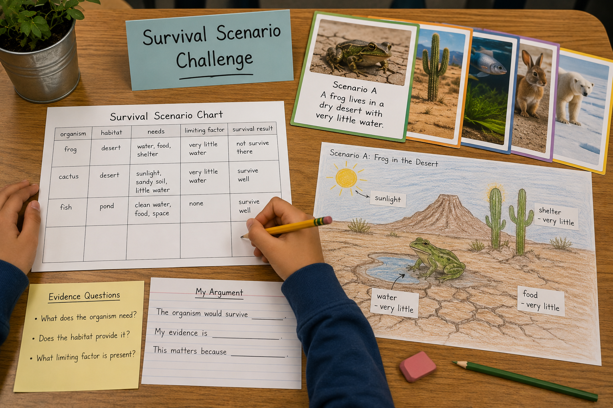
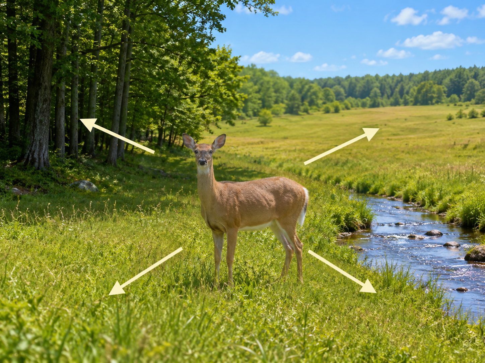
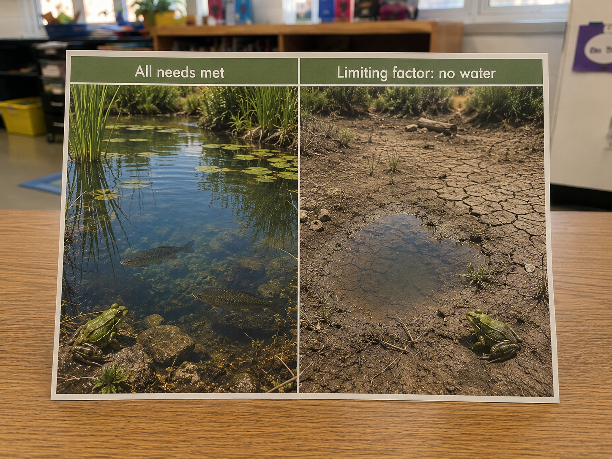

Hold this question in your mind as you work. By the end, you should be able to answer it with evidence from your investigation.
Start here. Learn the words you will use today.
Think about an animal you've seen recently — maybe a bird, a squirrel, or even a bug. It lives where it lives for a reason.
Every living thing has needs. When a habitat meets those needs, the organism can survive. When it doesn't — that's what we're investigating today.
These are the words scientists use when they study survival and habitats. Tap each card to flip it. You'll need every one of these during the investigation.
Copy this sentence carefully into your science notebook:
"A limiting factor is something in a habitat that makes it harder for an organism to survive."
Now learn the main science idea.

Every living thing has basic needs. A habitathabitatThe place where an organism lives and finds what it needs. is the place where an organism gets what it needs to stay alive.
Most organisms need four things from their habitat: food, water, shelter, and space. When a habitat provides all four, an organism can survive and thrive there.

Sometimes a habitat has most of what an organism needs — but one thing is missing or too low. That missing piece is called a limiting factorlimiting factorSomething in a habitat that makes survival harder..
Limiting factors can be too little food, water, shelter, or space. Predators and extreme weather can also limit survival. When a limiting factor is present, the organism might survive less well — or not at all.
Scientists don't guess. Before explaining what they think, they look for evidenceevidenceInformation that supports an explanation.. In this investigation, your evidence comes from each scenario — the organism's needs and whether the habitat provides them.
Ask these three questions for every scenario: What does this organism need? Does the habitat provide it? What limiting factor is present? Then decide: survive well, survive less well, or not survive at all.
Real-World Connection: A polar bear is built for ice and cold. Put it in a hot, dry forest with no ice and very little food, and every need goes unmet. That's not just a story — it's what scientists call a limiting factor problem.
For any habitat, some organisms survive well, some survive less well, and some cannot survive at all. It depends on whether the habitat meets the organism's needs.
When something is missing or limited, that's a limiting factor — and it's the key to explaining your survival result.
Curious? Go Deeper
What happens when the environment changes? Scientists have seen this play out in the real world. When rivers dry up, frogs disappear. When ocean temperatures rise, cold-water fish move north. Some organisms adapt over long periods of time — others don't make it.
This is exactly why scientists study limiting factors. If you know what an organism needs, you can predict where it can survive — and what threatens it. That knowledge helps conservationists protect endangered species by protecting the habitats those organisms depend on.
Now test the idea yourself.
You'll need: Your science notebook, a pencil, and colored pencils for your habitat drawing. Everything else is on this page.
📋 The Five Scenarios
Work through each step in your science notebook. Take your time — good scientists are careful and specific.

Choose three scenarios from the list above. Write the letters you chose at the top of your notebook page.
Create a chart with these five column headings: organism · habitat · needs · limiting factor · survival result. Fill it in for each of your three scenarios.
For each scenario, decide: Would this organism survive well, survive less well, or not survive at all? Write your survival result in your chart. Then identify the limiting factor.
Choose one scenario and draw its habitat in your notebook. Label the resources that are present and any that are missing or limited.
Write a scientific argument for your drawn scenario using this frame:
The organism would survive ______.
My evidence is ______.
This matters because ______.
Think about what you found. A good scientist notices exactly what they found — not just "it worked" or "it can't survive."
Tell the story of your investigation. What did you do first? What did you find? What surprised you? Use your chart and drawing to help you explain it.
Think through each question before moving on.
Check what you understand.
Show what you learned.
🔍 Part A — Identify the Limiting Factor
For each question below, use what you know about organisms and habitats to identify the limiting factor.
🚀 Part B — Short Answer
Answer each question in complete sentences. Use your science vocabulary.
Think about the polar bear scenario. That bear's needs are not being met in the warm forest. Use your investigation to explain what happens — and why evidence matters for that explanation.
What did you observe or decide about this scenario?
💡 Start with: "When I analyzed the polar bear scenario, I found that…"
What evidence supports your explanation?
💡 Start with: "My evidence is that the polar bear needs ______, but the habitat…"
Why does that make sense scientifically?
💡 Start with: "This makes sense because limiting factors show us that…"
📚 Try to use at least one of these words: limiting factor, habitat, evidence, survival
🎨 Part C — Draw & Label
Choose one of your scenarios and draw the habitat. Label the resources that are present and any that are missing or limited. Draw the organism inside the habitat. Show whether its needs are being met.
Submit your work on Canvas using one of these options:
Make sure your submission includes all of these: